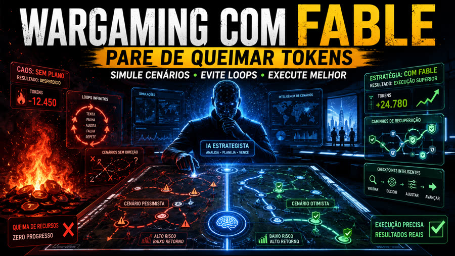
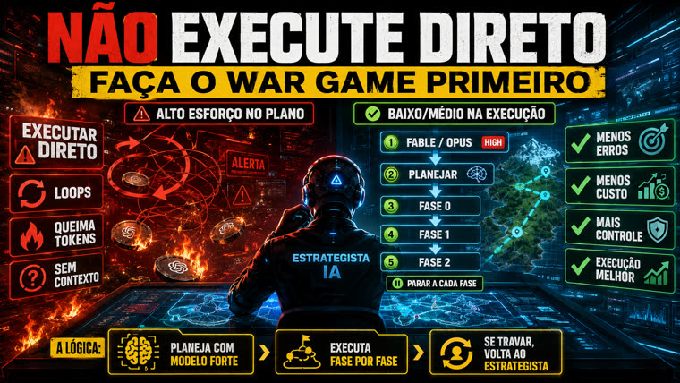

Un prompt listo para convertir cualquier briefing de proyecto en un war game: fases con suposiciones optimistas/pesimistas, modos de falla, criterios de salida verificables y una tabla maestra de riesgos — todo antes de escribir la primera línea de código.

Es un único texto — en EN y PT-BR — que pegas al inicio de una conversación con tu IA de planificación antes de pedir cualquier ejecución. No hace falta instalar nada.
Cada fase debe declarar un objetivo, una suposición optimista, una suposición pesimista, modos de falla con correcciones, criterios de salida verificables, una ruta alternativa y una condición de parada, antes de que exista código.
Una tabla única que cubre infraestructura, particularidades de la API del modelo, frontend, calidad de la conversación, seguridad y loop de aprendizaje; cada escenario incluye detección y recuperación.
Diseña una revisión semanal que recorra las conversaciones en busca de prompt injection y ajuste el estilo del agente dentro de límites estrictos: ningún cambio pasa a producción sin una evaluación de regresión y aprobación explícita.
La lógica detrás del prompt: un gran esfuerzo de razonamiento en la planificación permite un esfuerzo bajo o medio —y mucho más predecible— en la ejecución.
Solo necesitas un briefing y un modelo capaz de planificar a largo plazo — no hay instalación, dependencias ni build.
La descripción de lo que quieres construir: cuanto más concreta (stack, integraciones, responsable del proyecto), mejor será el plan.
# qué estamos construyendo "Um agente de chat com tour guiado + qualificação de lead..."
Elige el idioma y copia el archivo correspondiente del repo.
# EN cat doc/war-game-prompt.md # PT-BR cat doc/prompt-war-game-portugues.md
Un modelo con razonamiento avanzado (p. ej., Claude Opus/Fable en modo "high"), preferiblemente con acceso a herramientas de investigación.
# pega el prompt completado como a 1ª mensagem # sin contexto previo
El prompt fue diseñado para un "agente de inicio en frío" — funciona mejor como primer mensaje de una conversación nueva, sin contexto previo del proyecto.
Los dos archivos son equivalentes — elige el del idioma en el que vas a conversar con la IA.
cat doc/prompt-war-game-portugues.md # o doc/war-game-prompt.md (EN)
Cambia cada [PROJETO], [Claude Haiku], [Supabase Edge Functions], [workshops/serviços] etc. por los detalles reales de tu proyecto — modelo, infraestructura, stack, entregables esperados.
# antes Plan a full build of [PROJECT], but do it as a war game. # después Plan a full build of the Prompt Advisers website chat agent, but do it as a war game.
Sin preámbulos ni contexto adicional — el prompt ya pide todo lo que la IA necesita saber para planificar desde cero.
nova conversa → colar o prompt preenchido # Primer mensaje, sin historial
Si la IA se detiene antes de entregar los dos formatos que pide el prompt, pídele explícitamente ambos.
1. plano em Markdown (preâmbulo, caminho crítico, stack, estrutura, metodologia) 2. versão visual em HTML com diagramas da arquitetura e de cada fase
Detente al final de cada fase, revisa los criterios de salida y solo entonces pasa a la siguiente. Si llegas a una condición de parada, detente de verdad: registra el bloqueo en vez de dejar que la IA improvise una salida.
fase 0 → checar critérios de saída → fase 1 → ...
El prompt de arriba abre uno proyecto a fondo. Hay un segundo modo, en el mismo repo, para cuando la pregunta es otra: tengo varios proyectos detenidos — ¿cuál hago primero, cuál simplifico, cuál abandono?
Un proyecto, a fondo. Responde «¿cómo construir esto sin recibir golpes en el camino?». Entrega un plan por fases, una tabla maestra de fallas y un expediente visual en HTML.
Varios proyectos, comparados. Responde «¿por dónde empiezo?». Entrega un análisis por proyecto, un ranking por impacto/esfuerzo/riesgo y un plan de 30 y 90 días.
Ambos usan la misma lógica — acción → reacción → contraataque — y la misma regla: prever el obstáculo antes de la primera línea de código. La diferencia está en dónde se gasta el modelo costoso.
Nunca juntes varios en un solo archivo — eso mezcla el contexto y destruye la comparación. Empieza con el briefing mínimo de 5 preguntas; lo que no sepas, déjalo en blanco, no adivines.
analise-projetos/ ├── projetos/ # projeto-01.md, projeto-02.md, ... ├── resultados/ # la IA escribe aquí ├── contexto-geral.md # qué aplica a todos ├── criterios.md # los mismos criterios para todos ├── ledger.md # bloqueos └── assumptions.md # suposiciones, con impacto si son incorrectas
Esos dos archivos son los que permiten comparar proyectos diferentes. Un criterio común permite crear un ranking; los criterios por proyecto no permiten hacerlo.
# criterios.md — los mismos para todos substância clareza · problema real · público · valor · diferencial execução viabilidade · complexidade · gargalo · simplificação · automação risco o que impede · segurança · manutenção · escala retorno receita · custo
Genera una primera versión de todos los proyectos — sin pulir ninguno. Pulir el proyecto 01 antes de revisar el resto consume el presupuesto en el primero de la fila, que rara vez es el más importante.
cat doc/war-game-massa-portugues.md # o doc/mass-war-game.md (EN)
La primera ronda casi siempre sale genérica. La segunda es la que elimina lo genérico: busca contradicciones, riesgos ignorados, etapas sin validación y acciones sin condición de parada.
revisar /resultados → aprofundar war-game → atualizar ledger + suposições
El análisis puede ser masivo. La ejecución, no. Lee el resumo-geral.md, elige el prioritario y entrega su war-game con el prompt de ejecución.
modelo avançado pensa e antecipa modelo intermediário organiza modelo barato executa # siguiendo el plan ya detallado
O ledger.md e o assumptions.md son lo que impide que el análisis se convierta en ficción: sin ellos, el modelo inventa lo que falta para poder continuar. ¿Falta información? Se convierte en [PRECISA_DEFINIR: x] en el punto exacto donde haría falta.
¿Quieres ver hasta dónde llega? El ejemplo de resultado presenta un portafolio ficticio de 4 proyectos analizado de principio a fin — un análisis individual completo, o resumen general con clasificación y plan de 30/90 días, además del ledger y las suposiciones. Es la referencia de «listo» para este modo.
Los dos HTML de abajo (doc/war-game.html en EN y doc/war-game-portugues.html en PT-BR) son el resultado real del prompt aplicado al caso PA-CHAT-V0 — un agente de chat con Claude Haiku + Supabase — y sirven como referencia de lo que significa "listo".

Abrir dossier de ejemplo (EN) →
Abrir dossier de ejemplo (PT-BR) →
El prompt está estable en ambos idiomas. Próximos pasos posibles, sin comprometer fechas.